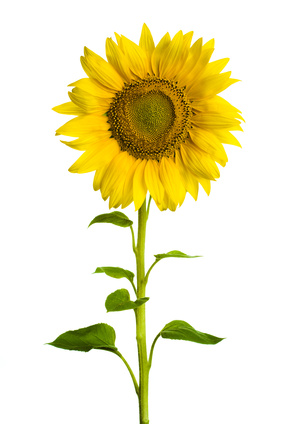

Sunflower (Helianthus annuus)

Mating & Breeding System: Sunflowers are a member of the aster family. The large flower head is actually an inflorescence, or composite flower, made up of two kinds of tiny florets. The disc florets are located in the center of the composite flower, and the ray florets bear the outer ring of petal-like structures.
Ray florets are sterile, and disc florets have both male and female structures, including a single ovary that develops into a sunflower seed. A single flower head may have up to two thousand disc florets, each with the potential to develop into a seed. If there are multiple flower heads on the same plant, the number of disc florets per head will be much lower. The disc florets open in sequence, beginning at the periphery of the disc and moving inward. Each floret is first male, with the pollen-bearing anthers extending above the rim of the floret. Later, the style pushes up and the stigmatic lobes spread, opening the receptive surfaces for pollination. If pollinator activity is adequate, the pollen is removed from each floret before the stigma opens, reducing the chances for self-pollination.
Pollination, Quality & Yield: Numerous experiments have found that a seed set as low as 10-20% results when pollinators are absent and plants self-pollinate, compared to up to 90% seed set in flower heads accessible to pollinators. It should be noted, that different cultivars have different levels of self-fertility, and many modern sunflowers are fully self-fertile. Cross-pollination may still be preferred, however, as it appears to give higher yields and better quality in terms of oil content.
Fertility of self-pollen may be greatly reduced at high temperatures, which increases the importance of prompt pollination of self-pollinated varieties during hot weather.
Many species of bees will visit sunflowers. Honey bees and bumble bees are known to be effective pollinators of this crop (depending on variety, see below), with bumble bees providing higher yield increases than honey bees.
Pollination Recommendations: Common practice is to place honey bee at the edge of the cultivated fields. A stocking rate of 1-2.5 colonies per hectare is considered sufficient.
For self-fertile varieties, adding honey bees is not necessary. Male-sterile hybrid sunflower cultivars always require insect pollen vectors to fertilize female flowers .
Certain sunflower varieties can have florets with tubes too deep for honey bees to forage for nectar. Bumble bees and many long-tongued wild bees are able to reach the nectar in the florets of these varieties, and can improve pollination rates. Moreover, research has shown that the interaction with wild bees can enhance honey bee pollination of sunflower, although the reasons for this are not understood.
References
Aslan, M.M. & Yavuksuz, C. 2010. Effect of honey bee (Apis mellifera L.) and bumble bee (Bombus terrestris L.) pollinators on yield and yield factors in sunflower (Helianthus annuus L.) production areas. Journal of Animal and Veterinary Advances 9:332-335.
Charriere, J.D. Imdorf, A., Koenig, C., Gallmann,S., & Kuhn, R. 2010. Do sunflowers influence the development of honey bee, Apis mellifera, colonies in areas with diversified crop farming? Journal of Apicultural Research.49:227-235.
Dag, A., Lior, E., & Afik, O. 2002. Pollination of confection sunflowers (Helianthus annuus L.) by honey bees (Apis mellifera L.). American Bee Journal. 142:443-445.
DeGrandi-Hoffman, G. & Watkins, J.C. 2000. The foraging activity of honey bees Apis mellifera and non-Apisbees on hybrid sunflowers (Helianthus annuus) and its influence on cross-pollination and seed set. Journal of Apicultural Research. 39:37-45.
DeGrandi-Hoffman, G. & Chambers, M. 2006. Effects of honey bee (Hymenoptera: Apidae) foraging on seed set in self-fertile sunflowers (Helianthus annuus L.). Environmental Entomology 35:1103-1108.
Free, J.B. 1993. Insect Pollination of Crops, 2nd edition. Academic Press.
Greenleaf, S.S. & Kremen, C. 2006. Wild bees enhance honey bees’ pollination of hybrid sunflower. Proceedings of the National Academy of Sciences 103:13890-13895.
Guynn, G. & Jaycox, E.R. 1973. Observations on sunflower pollination in Illinois. American Bee Journal113:168-169.
Kevan, P.G. 1988. Pollination, crops and bees. OMAFRA publication 72.
Meynie, S. & Bernard, R. 1997. Pollinator efficiency of some insects in relation to wild species populations of Helianthus L. Agronomie 17:43-51.
Nderitu, J., Nyamasyo, G., Kasina, M., & Oronje, M.L. 2008. Diversity of sunflower pollinators and their effect on seed yield in Makueni District, Eastern Kenya. Spanish Journal of Agricultural Research 6:271-278.
Oz, M., Karasu, A., Cakmak, I., Goksoy, A. T., & Turan, Z.M. 2009. Effects of honeybee (Apis mellifera) pollination on seed set in hybrid sunflower (Helianthus annuus L.). African Journal of Biotechnology 8:1037-1043.
Scott-Dupree, C.D., Winston, M., Hergert, G., Jay, S.C., Nelson, D., Gates, J., Termeer, B., & Otis, G. 1995. A guide to managing bees for crop pollination. Canadian Association of Professional Apiculturists, Aylesford NS.